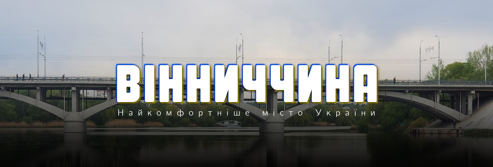
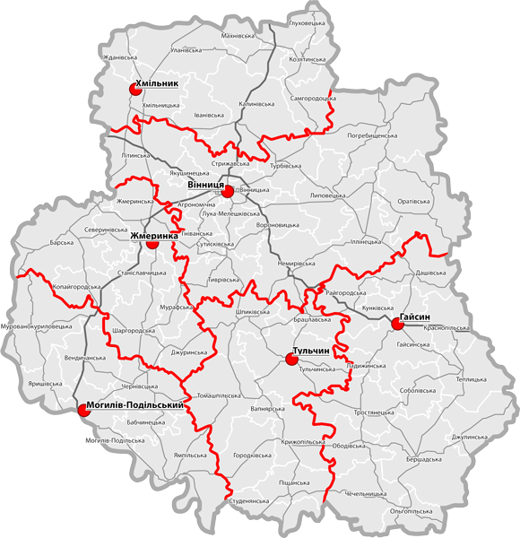
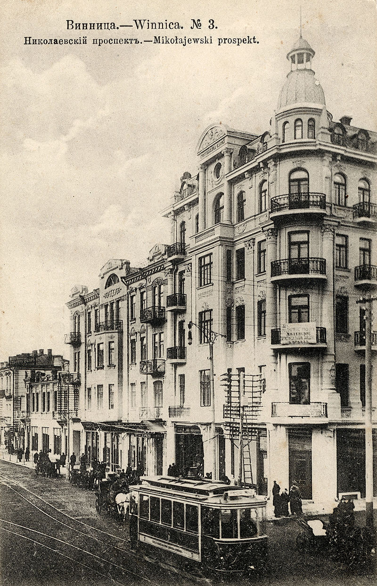
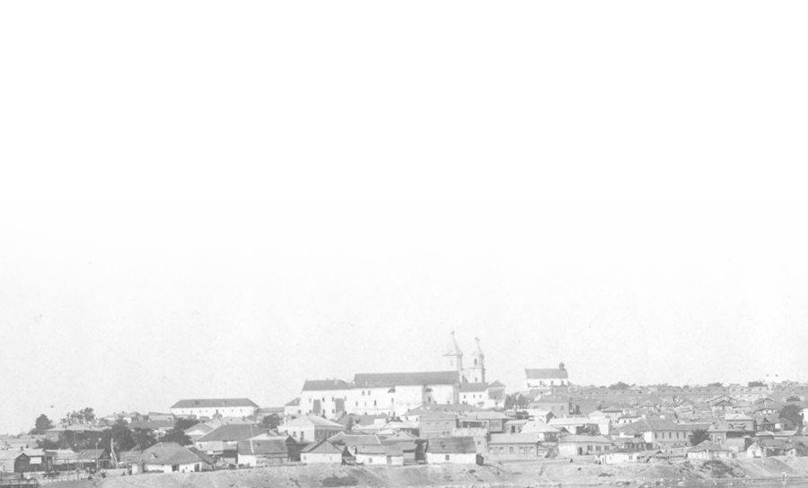
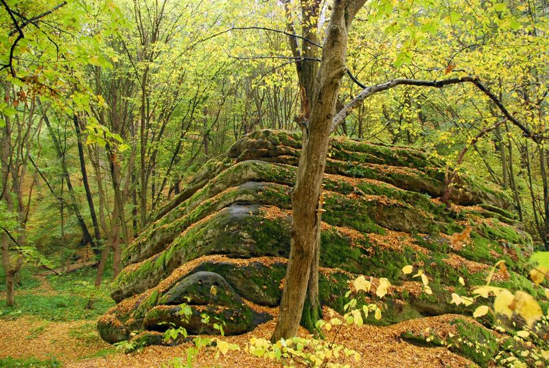
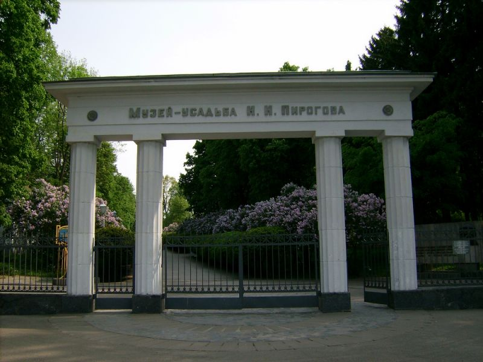
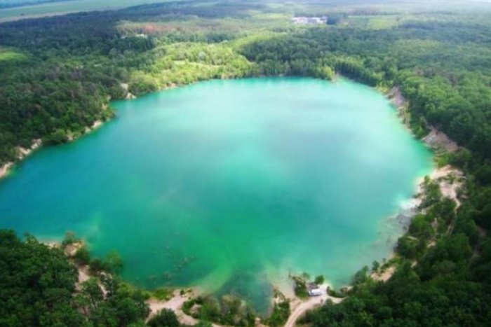
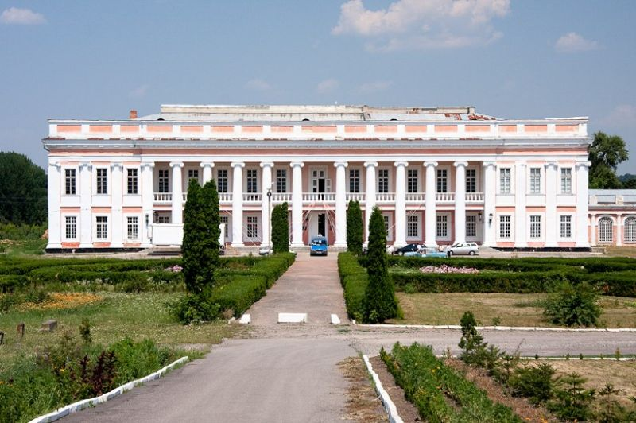
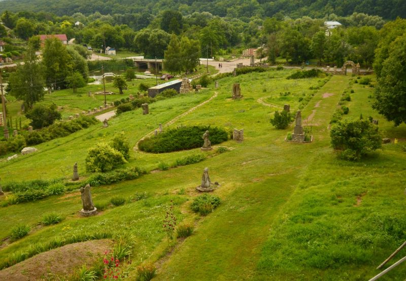
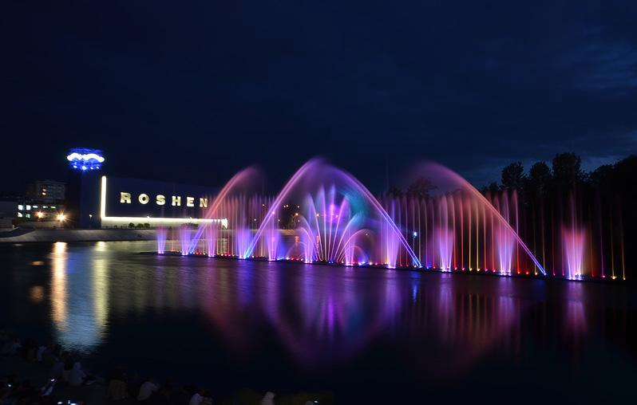

Розміри: 26 513км²
Кількість населення: 1 575 808 осіб
Кількість населення: 1 575 808 осіб
Географічне місце
На заході межує з Чернівецькою та Хмельницькою,
на півночі — з Житомирською, на сході — з
Київською, Кіровоградською та Черкаською, на
півдні — з Одеською областями України та з
Республікою Молдова.
на півночі — з Житомирською, на сході — з
Київською, Кіровоградською та Черкаською, на
півдні — з Одеською областями України та з
Республікою Молдова.
Область розташована в лісостеповій смузі правобережної
частини України. По території області протікають 204 річки
з них найбільші: Південний Буг та Дністер.
частини України. По території області протікають 204 річки
з них найбільші: Південний Буг та Дністер.
Водні ресурси
Південний Буг, Дністр і Дніпро на басейни яких
припадає відповідно 62, 28 і 10 % території області
припадає відповідно 62, 28 і 10 % території області
Природні особливості
За характером рельєфу, область являє собою
хвилясту, подекуди пагорбисту рівнину.
Клімат Вінниччини помірно-континентальний з
відносно м'якою зимою та теплим сонячним літом.
хвилясту, подекуди пагорбисту рівнину.
Клімат Вінниччини помірно-континентальний з
відносно м'якою зимою та теплим сонячним літом.
Історична довідка
Цiкаву легенду про зв’язок назви рiчки Вiннички з мiстом записала у 1959
роцi відома подільська фольклористка Є. В. Горб у Вiнницi: “Прийшов на
берег Бугу чоловiк, поставив собi хату i зажив з жiнкою. Мав двох дочок. Одну
ласкаво називав Вишенькою, а другу – Вiнничкою. Росли дiвчата, як ягоди,
рум’янi та веселi. А коли виросли, то одружив їх з працьовитими
риболовами. Поставила Вишенька з своїм чоловiком дерев’яну хату на
правiм березi Бугу, а Вiнничка – на лiвому. Рубали лiс, випалювали пнi,
землю орали i жито засiвали. В дуплах мед вибирали…
Одного разу зiрвався сильний вiтер, завив. Птицi перестали спiвати, сонце
зайшло за чорну хмару. То не вiтер вив, не буря надходила, а страшнi
вороженьки понад Бугом чорний копоть пiдняли. Оточили зненацька
домiвки Вишеньки i Вiннички, хотiли всiх в полон забрати, на схiдних
ринках молодичок продати. Виходу не було. Краще смерть, нiж довга i чорна
неволя. Вiнничка першою запалила свою хату. Сестра Вишенька побачила
вогонь за Бугом i також розвела вогонь в оточенiй хатi. Як двi свiчки, палало
сухе дерево, трiскотiв вогонь. Вiд пекучого жару та їдкого диму трiсли серця
двох сестер…
Проминули лiта. Багато води у Бузi протекло. Прийшли новi люди сюди,
осiли, побачили згарища, дiзналися про гiрку долю Вiннички i Вишеньки. На
пам’ять добру про них назвали їх iменами рiчки, що несуть свої води до
Пiвденного Бугу. Побудували тут фортецю, а мiсто бiля неї назвали iменем
рiчки Вiнницею”.


роцi відома подільська фольклористка Є. В. Горб у Вiнницi: “Прийшов на
берег Бугу чоловiк, поставив собi хату i зажив з жiнкою. Мав двох дочок. Одну
ласкаво називав Вишенькою, а другу – Вiнничкою. Росли дiвчата, як ягоди,
рум’янi та веселi. А коли виросли, то одружив їх з працьовитими
риболовами. Поставила Вишенька з своїм чоловiком дерев’яну хату на
правiм березi Бугу, а Вiнничка – на лiвому. Рубали лiс, випалювали пнi,
землю орали i жито засiвали. В дуплах мед вибирали…
Одного разу зiрвався сильний вiтер, завив. Птицi перестали спiвати, сонце
зайшло за чорну хмару. То не вiтер вив, не буря надходила, а страшнi
вороженьки понад Бугом чорний копоть пiдняли. Оточили зненацька
домiвки Вишеньки i Вiннички, хотiли всiх в полон забрати, на схiдних
ринках молодичок продати. Виходу не було. Краще смерть, нiж довга i чорна
неволя. Вiнничка першою запалила свою хату. Сестра Вишенька побачила
вогонь за Бугом i також розвела вогонь в оточенiй хатi. Як двi свiчки, палало
сухе дерево, трiскотiв вогонь. Вiд пекучого жару та їдкого диму трiсли серця
двох сестер…
Проминули лiта. Багато води у Бузi протекло. Прийшли новi люди сюди,
осiли, побачили згарища, дiзналися про гiрку долю Вiннички i Вишеньки. На
пам’ять добру про них назвали їх iменами рiчки, що несуть свої води до
Пiвденного Бугу. Побудували тут фортецю, а мiсто бiля неї назвали iменем
рiчки Вiнницею”.
Традиції та колорит
Великоднє гуляння «Водити Володара» в селі Розкошівка Теплицького району
Борщівська народна вишивка
Карпатське ліжникар
Культура приготування українського борщу.
В нас дуже гарно збереженні та розвиваються традиції писанкарства, а вишивка
– це взагалі візитівка Вінниччини. Ми на регіональному рівні проводимо багато
заходів, які популяризують ці види народної культури
Борщівська народна вишивка
Карпатське ліжникар
Культура приготування українського борщу.
В нас дуже гарно збереженні та розвиваються традиції писанкарства, а вишивка
– це взагалі візитівка Вінниччини. Ми на регіональному рівні проводимо багато
заходів, які популяризують ці види народної культури
Історичні особистості
Вінниця була столицею України. З 2 лютого 1919 року Директорія УНР переїхала
до Вінниці, через складну політичну обстановку. Директорія тоді була
найвищим органом державної влади, тому на цілий місяць Вінниця стала
столицею України.
1923 року місто стає центром округу, а від 1931 року й досі — адміністративним
центром утвореної Вінницької області. Нині Вінниця постійно зростає, набуває
європейських рис, розвивається, як промисловий та адміністративний центр
області, органічно пов’язаний з іншими регіонами держави. За ініціативи та
сприяння міської влади в останні 2 роки розширилась інфраструктура
підтримки підприємництва. Розвиток підприємництва набуває більш вагомого
соціального і економічного значення.
до Вінниці, через складну політичну обстановку. Директорія тоді була
найвищим органом державної влади, тому на цілий місяць Вінниця стала
столицею України.
1923 року місто стає центром округу, а від 1931 року й досі — адміністративним
центром утвореної Вінницької області. Нині Вінниця постійно зростає, набуває
європейських рис, розвивається, як промисловий та адміністративний центр
області, органічно пов’язаний з іншими регіонами держави. За ініціативи та
сприяння міської влади в останні 2 роки розширилась інфраструктура
підтримки підприємництва. Розвиток підприємництва набуває більш вагомого
соціального і економічного значення.
Технологічні особливості
У місті було багато потужних підприємств, які розробляли різноманітні пристрої
та програми для аерокосмічної, комп’ютерної та військової промисловості
всього Союзу. Заводи: «Маяк», «Термінал», «45-й експериментальний завод»,
«Аналог», ламповий і радіотехнічний тощо.
та програми для аерокосмічної, комп’ютерної та військової промисловості
всього Союзу. Заводи: «Маяк», «Термінал», «45-й експериментальний завод»,
«Аналог», ламповий і радіотехнічний тощо.
Культурні особливості
Серед головних пам'яток у місті Вінниці слід відзначити:
Вінницькі мури
Обласний краєзнавчий музей
Водонапірна вежа
Національний музей-садиба М.І. Пирогова
Ставка Гітлера Вервольф
Державний історико-культурний заповідник «Буша»
Вінниця в мініатюрі
Єврейський квартал - Єрусалимка
Центральний міський парк
Незвичайні скульптури та пам'ятки
Центральний міський парк
День Европи
Вінницькі мури
Обласний краєзнавчий музей
Водонапірна вежа
Національний музей-садиба М.І. Пирогова
Ставка Гітлера Вервольф
Державний історико-культурний заповідник «Буша»
Вінниця в мініатюрі
Єврейський квартал - Єрусалимка
Центральний міський парк
Незвичайні скульптури та пам'ятки
Центральний міський парк
День Европи
Наші маршрути по Вінниччині

Історико-культурний комплекс «Буша» та «Гайдамацький яр»
Сакральне місце слов’ян, що зберігає в собі
родову пам’ять століть і тисячоліть. Тут
знаходиться унікальний скельний Храм,
присвячений Великій Бого-Матері, а також
залишки фортеці, підземних ходів, міської
ратуші та цвинтар.
родову пам’ять століть і тисячоліть. Тут
знаходиться унікальний скельний Храм,
присвячений Великій Бого-Матері, а також
залишки фортеці, підземних ходів, міської
ратуші та цвинтар.
с. Буша, Ямпільський район

Національний музей-садиба Пирогова
Знаходиться в південно-західній частині міста
Вінниці, у садибі Вишня, де впродовж останніх
двадцяти років (1861−1881) жив і працював
видатний вчений, геніальний хірург, анатом,
творець воєнно-польової хірургії, засновник
Товариства Червоного Хреста, педагог і
громадський діяч Микола Іванович Пирогов.
Вінниці, у садибі Вишня, де впродовж останніх
двадцяти років (1861−1881) жив і працював
видатний вчений, геніальний хірург, анатом,
творець воєнно-польової хірургії, засновник
Товариства Червоного Хреста, педагог і
громадський діяч Микола Іванович Пирогов.

Черепашинці
Дивовижна природа України має чим здивувати:
Одне з таких дивовижних озер знаходиться в Черепашинцях
знаходиться в Черепашинцях Вінницької області. Вода в
озері прозора та має дещо блакитне забарвлення.
За походженням затоплений кар'єр гранітовий.
Береги водойми — це глиняні та піщані урвища
висотою до 7−8 метрів. Однак єтут і пологий пляж.
Одне з таких дивовижних озер знаходиться в Черепашинцях
знаходиться в Черепашинцях Вінницької області. Вода в
озері прозора та має дещо блакитне забарвлення.
За походженням затоплений кар'єр гранітовий.
Береги водойми — це глиняні та піщані урвища
висотою до 7−8 метрів. Однак єтут і пологий пляж.

Потоцьких
Один з найбільших палаців України,
свого часу був головною резиденцією Потоцьких.
свого часу був головною резиденцією Потоцьких.
м. Тульчин

Історико-культурний заповідник Буша
Село Буша знаходиться практично на кордоні з
Молдовою. Визначним цей населений пункт робить
старовинна кам’яна вежа – залишок від фортеці XVI
століття, яка бачила наживо велике повстання Богдана
Хмельницького. Навколо вежі сьогодні утворений
історико-культурний заповідник з етнографічним
музеєм та древнім козацьким кладовищем з рештками
кам’яних хрестів та пам’ятних знаків. Тут можна
буквально доторкнутись до історії своїми руками,
відчути подих старовини та дізнатись більше про наших
предків.
Молдовою. Визначним цей населений пункт робить
старовинна кам’яна вежа – залишок від фортеці XVI
століття, яка бачила наживо велике повстання Богдана
Хмельницького. Навколо вежі сьогодні утворений
історико-культурний заповідник з етнографічним
музеєм та древнім козацьким кладовищем з рештками
кам’яних хрестів та пам’ятних знаків. Тут можна
буквально доторкнутись до історії своїми руками,
відчути подих старовини та дізнатись більше про наших
предків.

Фонтан «Roshen»
Фонтан «Roshen» — фонтан, збудований у
руслі річки Південний Буг поблизу
острова Кемпа у Вінниці.
Це найбільший в Україні та Європі
плавучий фонтан
руслі річки Південний Буг поблизу
острова Кемпа у Вінниці.
Це найбільший в Україні та Європі
плавучий фонтан
2002-2022 Туроператор Valantra Travel Company